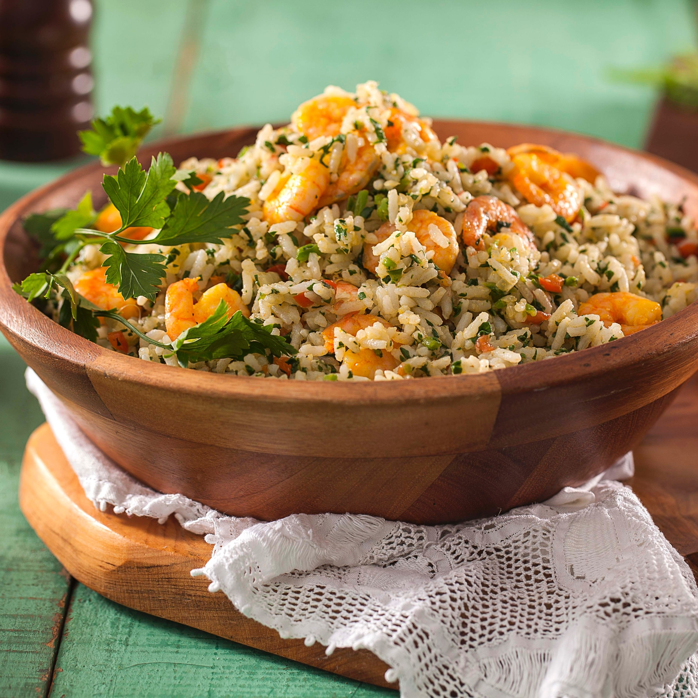
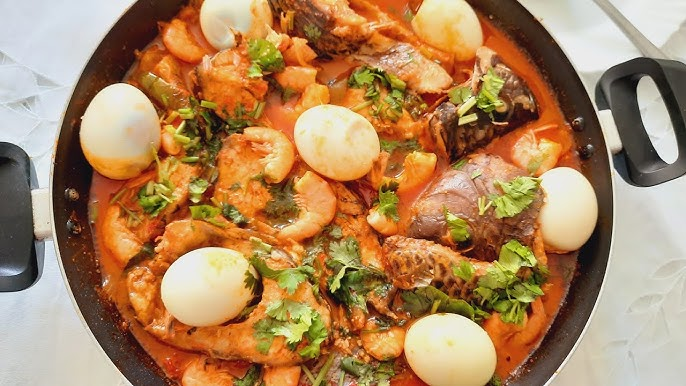
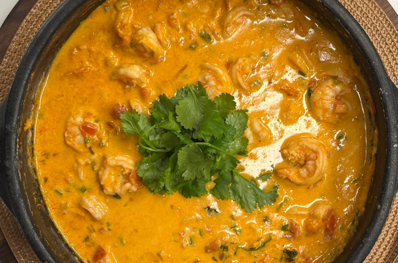
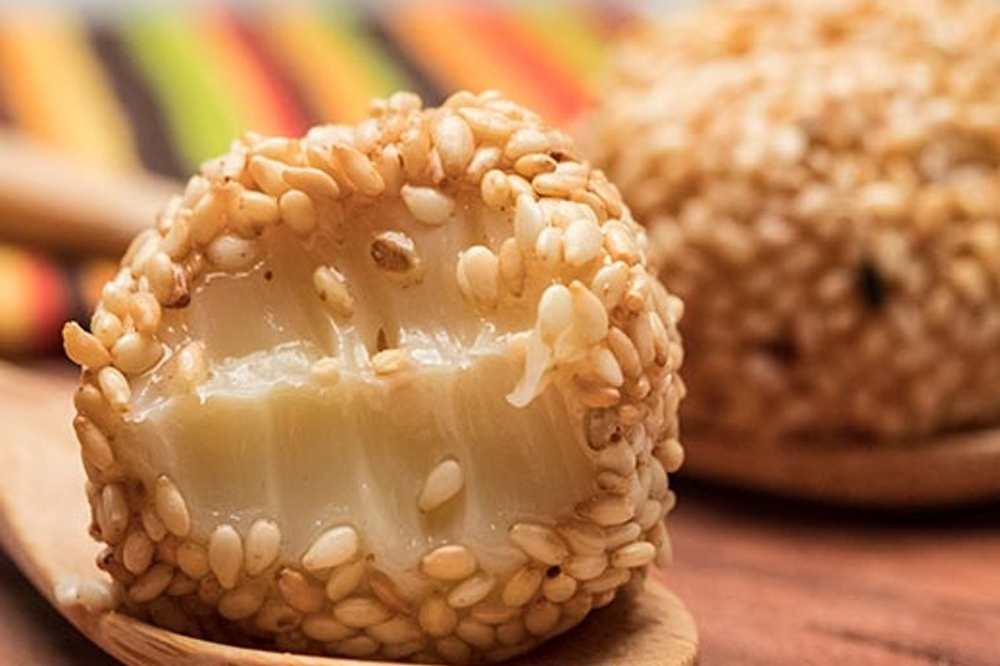
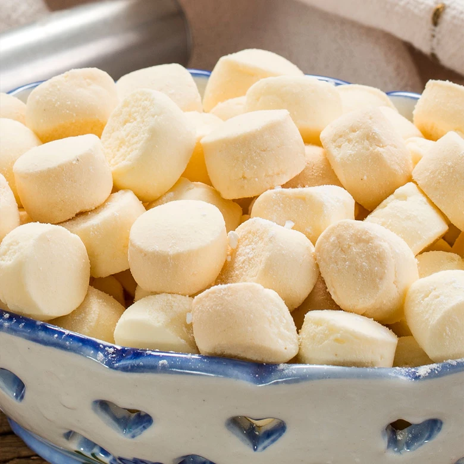

O modo de preparo do Arroz de Cuxá envolve duas etapas principais: o preparo do molho de cuxá e, em seguida, a mistura com o arroz.
É um processo que exige um pouco de paciência no preparo da vinagreira, mas o resultado é um prato saboroso e autêntico.
Preparar a Vinagreira:
Lave bem as folhas de vinagreira.
Em uma panela com água fervente, escalde as folhas por cerca de 2 a 3 minutos. Esse processo ajuda a reduzir a acidez excessiva e amolecer as folhas.
Escorra a água e, se desejar um sabor menos ácido, repita o processo de escaldar em água limpa mais uma vez.
Pique as folhas escaldadas em pedaços pequenos. Reserve.
2. Preparar o Camarão Seco:
Deixe o camarão seco de molho em água por cerca de 30 minutos para dessalgar. Escorra bem.
Se os camarões forem grandes, retire as cabeças e as cascas. Triture-os levemente ou desfie-os grosseiramente.
3. Preparar o Molho de Cuxá:
Em uma panela, aqueça um pouco de azeite ou óleo e refogue o alho e a cebola até dourarem.
Adicione o camarão seco desfiado e refogue por mais alguns minutos.
Junte a vinagreira picada e refogue bem, mexendo sempre, por uns 5 a 10 minutos, até que as folhas estejam bem murchas e integradas ao refogado.
Adicione um pouco de água (cerca de 1/2 xícara) se necessário, para ajudar no cozimento.
Acrescente o gergelim torrado e a pimenta-de-cheiro picada. Mexa bem.
4. Engrossar o Molho:
Aos poucos, adicione a farinha de mandioca, mexendo constantemente, até que o molho atinja uma consistência cremosa e encorpada, semelhante a um pirão ou tutu, mas sem ficar muito denso. A quantidade de farinha varia conforme a preferência pessoal.
5. Finalizar o Arroz:
Prove o tempero do molho e ajuste o sal, se necessário (lembrando do sal do camarão).
Desligue o fogo do molho.
Em uma travessa grande ou panela, misture o molho de cuxá com o arroz branco já cozido e solto.
Adicione o coentro e a cebolinha picados e misture delicadamente até que o arroz esteja uniformemente verde e temperado.
Sirva imediatamente como prato principal ou acompanhamento!
Ingrediente principal: Peixes de carne firme como pescada-amarela, robalo ou dourado.
Diferencial: É um cozido rico em legumes frescos, como batata, cenoura, tomate, pimentão e cebola. Um toque comum e típico é a adição de ovos cozidos inteiros no final do preparo.
Tempero: O sabor é construído com temperos como alho, pimenta-de-cheiro e cheiro-verde (coentro e cebolinha), cozidos em um molho saboroso, geralmente com leite de coco.
Preparo dos Ingredientes: O peixe é cortado em postas e temperado com sal e alho. Os legumes (batatas e cenouras) são cortados em rodelas e pré-cozidos ou cozidos junto com o peixe. Tomates, cebolas e pimentões são fatiados em rodelas. Ovos são cozidos separadamente.
Montagem e Cozimento: Em uma panela grande, inicia-se uma camada de refogado de alho e cebola. Em seguida, alternam-se camadas de peixe, legumes e vegetais (tomate, pimentão, cebola, cheiro-verde).
O Molho: Adiciona-se leite de coco e, às vezes, um pouco de água ou caldo de peixe suficiente para cobrir os ingredientes.
Cozedura: Cozinha-se em fogo médio, sem mexer muito para não quebrar as postas de peixe, até que tudo esteja macio.
Finalização: Os ovos cozidos são adicionados nos minutos finais para aquecerem.
Acompanhamentos
A peixada é um prato completo, mas é tradicionalmente servida com arroz branco, pirão (feito com o caldo do próprio cozido e farinha de mandioca) e farinha d'água ou farofa de castanha de caju.
Temperar o Peixe e Camarão: Em uma tigela, tempere as postas de peixe e os camarões com o suco de limão, alho amassado, sal e pimenta-do-reino. Deixe marinar por pelo menos 30 minutos para absorver o sabor.
Preparar a Panela: Em uma panela de barro ou de fundo grosso (panela de ferro é excelente), faça camadas com os vegetais: comece com uma camada de cebola, seguida por tomate e pimentões.
Adicionar o Peixe: Distribua as postas de peixe (e camarões) marinados sobre a camada de vegetais.
Mais Camadas: Cubra o peixe com o restante dos vegetais e a pimenta de cheiro. Salpique metade do coentro e da cebolinha picados.
Adicionar o Líquido: Despeje o leite de coco sobre todos os ingredientes na panela. Adicione um fio de azeite por cima, se desejar.
Cozinhar: Leve a panela ao fogo médio. Quando começar a ferver, reduza para fogo baixo, tampe a panela e deixe cozinhar lentamente por cerca de 15 a 20 minutos. Evite mexer muito para não desmanchar o peixe. O cozimento é rápido.
Finalizar: Prove o tempero e ajuste o sal, se necessário. Desligue o fogo e adicione o restante do coentro e cebolinha. Tampe novamente e deixe descansar por uns 5 a 10 minutos antes de servir, para que os sabores se incorporem.
Acompanhamentos Sugeridos
Sirva a moqueca maranhense imediatamente, acompanhada de arroz branco soltinho, pirão (feito com o caldo da própria moqueca e farinha de mandioca) e a tradicional farofa.
Derreter a Rapadura: Em uma panela grande, coloque a rapadura picada e a água. Leve ao fogo médio, mexendo ocasionalmente, até que a rapadura esteja completamente dissolvida e a mistura comece a formar um caramelo ou uma calda espessa.
Torrar e Moer o Gergelim: Enquanto a rapadura derrete, torre as sementes de gergelim em uma frigideira seca até ficarem levemente douradas e cheirosas. Deixe esfriar um pouco e, em seguida, triture no liquidificador ou processador até obter uma farinha ou pasta grossa.
Adicionar Ingredientes Secos: Com o caramelo no ponto (consistência de calda grossa), adicione o gergelim triturado, a farinha de mandioca e as especiarias (cravo, pimenta, etc.).
Mexer Constantemente: Mexa vigorosamente a mistura em fogo baixo a médio. O objetivo é que todos os ingredientes se incorporem ao caramelo e a mistura desgrude do fundo da panela, atingindo uma consistência firme, semelhante à de uma cocada de corte.
Adicionar Leite de Coco (Opcional): Se desejar uma textura mais cremosa e úmida, adicione um pouco de leite de coco durante o cozimento, ajustando a quantidade para não ficar muito mole.
Moldar e Esfriar: Despeje a massa em uma superfície lisa e untada (como uma pedra de mármore, assadeira ou papel manteiga). Com as mãos ou uma espátula untada, alise a massa. Você pode cortar em pedaços do tamanho desejado enquanto ainda está morno ou enrolar em pequenas bolinhas.
Finalizar: Deixe o doce esfriar completamente. Depois de frio, ele endurece e pode ser embalado em saquinhos de celofane ou guardado em potes herméticos.
Peneirar a Goma: Comece peneirando a goma de mandioca em uma tigela grande para retirar eventuais grumos.
Misturar Ingredientes Secos: Adicione o açúcar, o sal e o coco ralado (se estiver usando) à goma peneirada e misture bem.
Adicionar Gordura e Ovos: Acrescente a manteiga (em temperatura ambiente ou ligeiramente derretida) e os ovos ou gemas. Amasse com as mãos até obter uma mistura homogênea e que comece a dar liga.
Adicionar Líquidos: Gradualmente, adicione o leite de coco (se estiver usando) ou água suficiente para que a massa fique macia, maleável e fácil de moldar, mas sem grudar nas mãos. O ponto ideal é quando a massa fica suave e consistente.
Modelar as Bolachinhas: Modele a massa em pequenos formatos, como bolinhas, palitos ou rodelas, usando a criatividade. Para um toque final decorativo, pressione levemente os biscoitos com as pontas de um garfo.
Organizar na Assadeira: Disponha as bolachinhas em uma assadeira sem untar (a quantidade de gordura na massa geralmente é suficiente para não grudar).
Assar: Leve ao forno pré-aquecido a uma temperatura média de aproximadamente 180°C por cerca de 10 a 15 minutos. O segredo é assar até que fiquem firmes, mas sem dourar muito, pois devem permanecer claras para garantir a textura que derrete na boca.
Esfriar e Servir: Retire do forno, deixe esfriar completamente na assadeira antes de guardar ou servir, pois elas endurecem ao esfriar.
2-prato:Peixada Maranhense
A Peixada Maranhense é um prato tradicional do Maranhão, que se assemelha a um cozido ou uma moqueca suave, mas com características próprias: utiliza legumes frescos e, tradicionalmente, não leva azeite de dendê, diferenciando-se da versão baiana.
3-prato:Moqueca Maranhense
O modo de preparo da moqueca maranhense envolve a criação de camadas de ingredientes frescos que cozinham lentamente em seus próprios sucos e no leite de coco, resultando em um molho aromático e delicioso, sem a adição de azeite de dendê
Sobremesas
4-Sobremesa:Doce de Gergelim
O modo de preparo do Doce de Espécie (doce de gergelim com rapadura) envolve a transformação da rapadura em um caramelo e a incorporação dos demais ingredientes, especialmente o gergelim torrado e moído
5-Sobremesa:Bolacha de Goma
O modo de preparo da bolacha de goma é simples e artesanal, geralmente envolvendo a mistura manual dos ingredientes até formar uma massa macia e moldável, que é então assada até ficar leve e crocante.